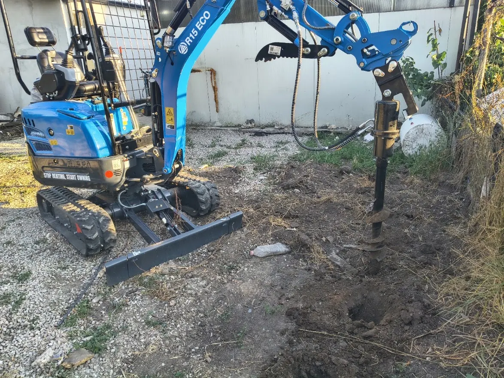

Ограда пакет
Изкопи за огради — ивица + дупки за колове

Най-честата поръчка в района: ивична основа за ограда плюс дупки за колове. Работим с кофа 40 см и хидравличен свредел 150 мм — в една визита, с една машина.
Какво включва услугата
- Изкоп за ивична основа по линията на оградата
- Пробиване на дупки за метални или бетонни колове
- Работа в тесни ивици до съседни имоти и настилки
Предимство на Rippa R15
Ширина около 1 м и гумени вериги — подходящ за дворове с трева, плочки и тесни междублокови пространства в Костинброд, Божурище и селата.
Цена
Пакет ограда (ориентир): 350–500 € според метража. Отделно: машиносмяна изкоп 200–230 €, свредел от 3 €/дупка. Цени.